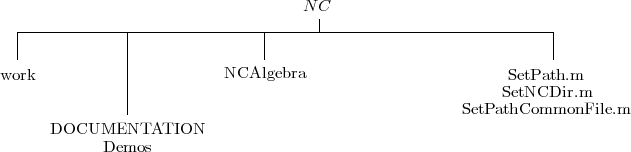

This adds a little more detail to Section 26.

If you have the whole huge sets of directories and are desperate for space you can delete all but this.
NCAlgebra.m CEEP
Lots of files starting with NC. Lots of files ending with Extra. Files related to TeX. |
The most reliable way to find out the names of the NC-files actually used for computation is to consult the file NCAlgebra.m. It automatically loads them.
The files which have the suffix “Extra.” were small programs that are not fully tested and some of which are small specialized functions which may not be (are probably not) valuable to others. We include them just in case they may be valuable to someone and so that they can give examples of how someone may extend the code for their own purposes.